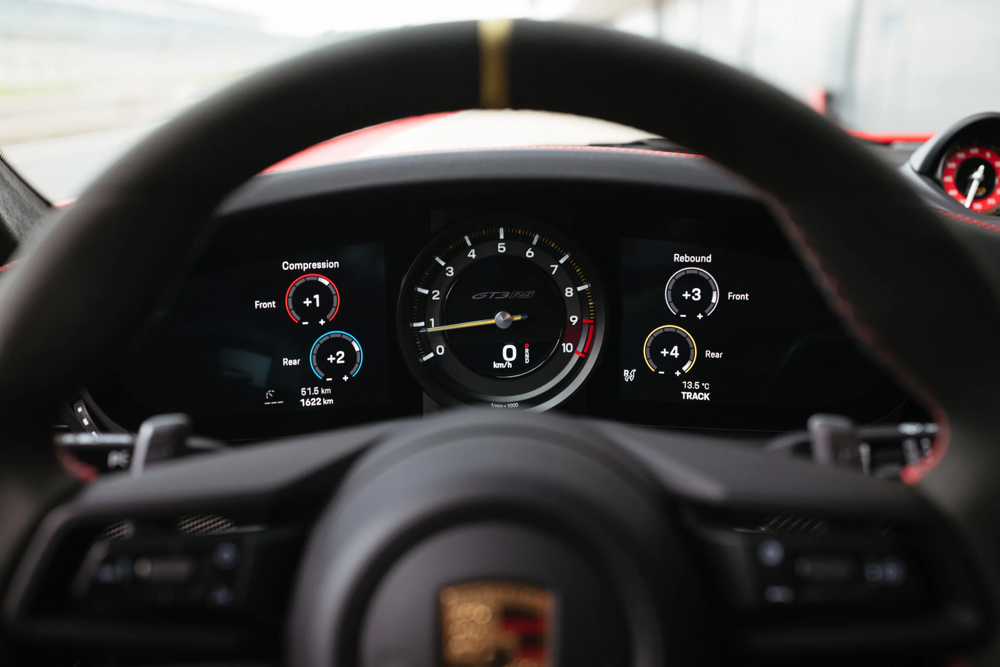
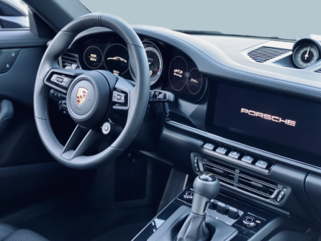

Het dashboard
Het dashboard van de Porsche 911 992 GT3 RS is een knap staaltje van functioneel design. Met een focus op de bestuurder biedt het een intuïtieve indeling van bedieningselementen, waarbij essentiële informatie centraal staat. Koolstofvezelaccenten voegen een vleugje racegevoel toe, terwijl hoogwaardige materialen en afwerkingen zorgen voor een luxueuze uitstraling. Het digitale instrumentenpaneel biedt aanpasbare weergaven, waardoor de bestuurder relevante gegevens gemakkelijk kan aflezen, terwijl het multifunctionele stuurwiel een directe verbinding met de weg biedt. Kortom, het dashboard van de GT3 RS combineert functionaliteit met esthetiek voor een meeslepende rijervaring.